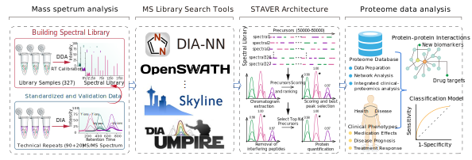

Welcome to STAVER’s documentation!¶
{kind=link}
staver implements the STAVER (Standardized Benchmark Dataset-Based Algorithm for Variation Effective Reduction) algorithm, for removing unwanted noise information in large-scale DIA proteome data. STAVER, featuring a modular design, provides flexible compatibility with existing DIA-MS data analysis pipelines
In the context of DIA proteomics, the DIA-MS data is inherently complex and requires a spectral library construction, typically using either DDA data or predictive deep learning-based methods. Building these libraries from complex sample-derived spectra or predictions based on the protein sequence database could introduce unwanted noise, potentially increasing the risk of false discoveries and introducing variability into the DIA proteome searches and quantification. Therefore, a robust algorithm is imperative for discerning and eliminating extraneous noise generated during the library search process, ensuring trustworthy spectrum identification and accurate protein quantification.
STAVER is a flexible framework that utilizes prior knowledge regarding peptide separation coordinates (retention time [RT]) and fragment ion intensities from the standard benchmark datasets, which effectively mitigates non-biological noise potential during library searches, enhancing spectrum identifications and protein quantification accuracy. Furthermore, the robustness and broad applicability of STAVER in was validated in multiple large-scale DIA datasets from different platforms and laboratories, demonstrating significantly improved precision and reproducibility of protein quantification. It facilitates the comparative and integrative analysis of DIA datasets across different platforms and laboratories, enhancing the consistency and reliability of findings in clinical research.
{kind=link}
To get started with staver, check out the installation guide and tutorials.
For more details about the STAVER framework, please check out our Preprint.